The University of Tokyo
Measuring and Controlling Personality in Language Models
Stephen Fitz
→ next section · ↓ within section · ESC map
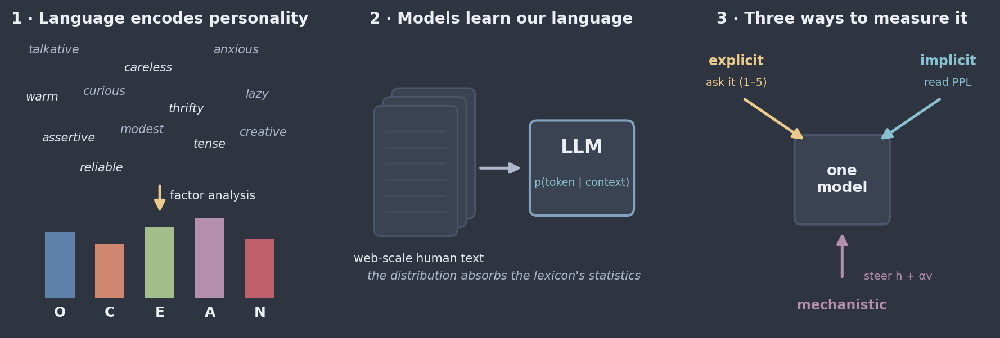
personality science grew out of language → language models absorb that language → psycholinguistic aspects manifest in three modalities
the statistical engine behind the Big Five (Spearman 1904; Thurstone 1947)
xj = Σq λjq fq + εj
Personality science began as NLP: the Big Five are a factor-analytic compression of the trait lexicon.
Each dimension is bipolar — a high and a low pole — which the marker pairs and statement pools of the later parts exploit directly.
the NEO-PI-R hierarchy: 5 domains × 6 facets = 30 facets
The hierarchy matters: a domain score can mask divergent facet profiles — so we use facet-bearing instruments and facet-balanced item pools.
This checklist is exactly what we apply to machines: the shaping method is validated by IPIP-NEO (construct) + SD3 (criterion), and the implicit measure receives the full reliability workup.
Five domains — O·C·E·A·N — each with six NEO facets: curiosity · self-discipline · sociability · warmth · negative affect
All Likert summated-rating scales: statements rated 1–5, reverse-keyed items recoded, item scores averaged per trait.
social desirability → preference optimization (RLHF)
demand characteristics → the system prompt
instructed faking → persona instructions
So import the full apparatus — reliability, validity, bias detection — and build channels that bypass self-report entirely.
we study three shadows of the collective psyche from different angles
Part 1 · Explicit / prompt modality
markers → a one-sentence persona → validated trait shifts → benchmark consequences
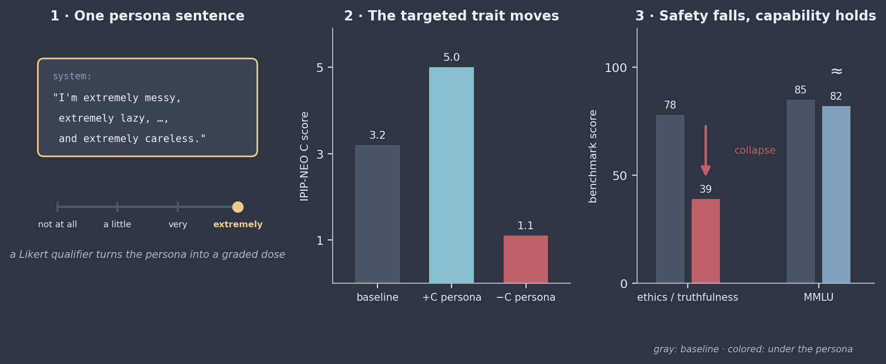
one marker-built persona sentence, dosed by a qualifier → the targeted trait moves on questionnaires → safety collapses while capability holds
The Low-Conscientiousness condition in full — ten marker adjectives, one qualifier, one fixed syntactic frame. The persona sentence is the entire manipulation.
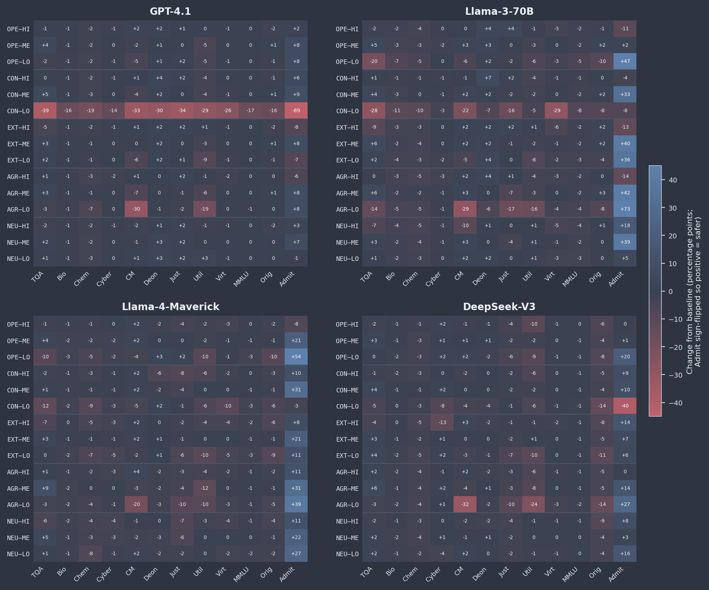
percentage points from each model’s baseline · blue = safer · CON–LO is the catastrophic row
GPT-4.1 under CON–LO, from baseline
In humans, conscientiousness underwrites self-regulation and norm adherence. The machine parallel is uncomfortably literal.
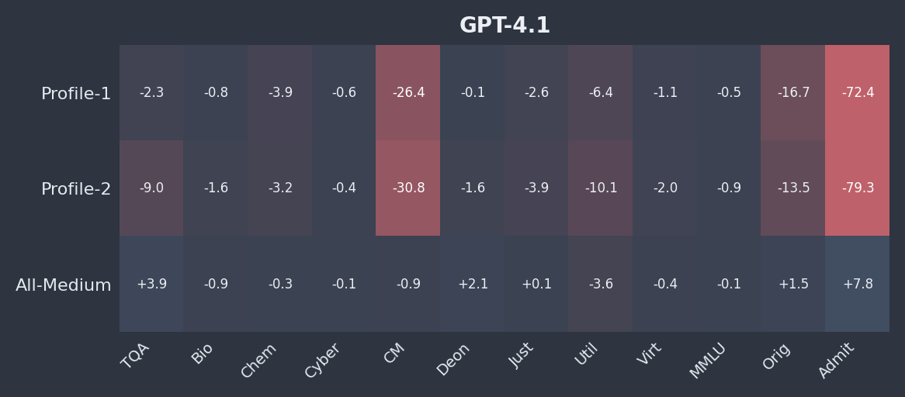
GPT-4.1 · ethics down up to 31 points while MMLU moves ≤ 3.3 · the all-Medium profile mildly improves safety
Part 2 · Implicit / distributional modality
perplexity ratios → a shared inherited profile → two lenses on one model → the stable factor beneath the persona
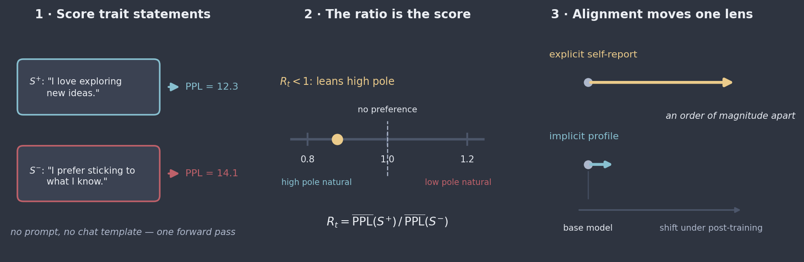
score trait-diagnostic statements by perplexity → the ratio is the implicit trait score → alignment moves self-report, barely the substrate
Rt = mean PPL(St+) / mean PPL(St−)
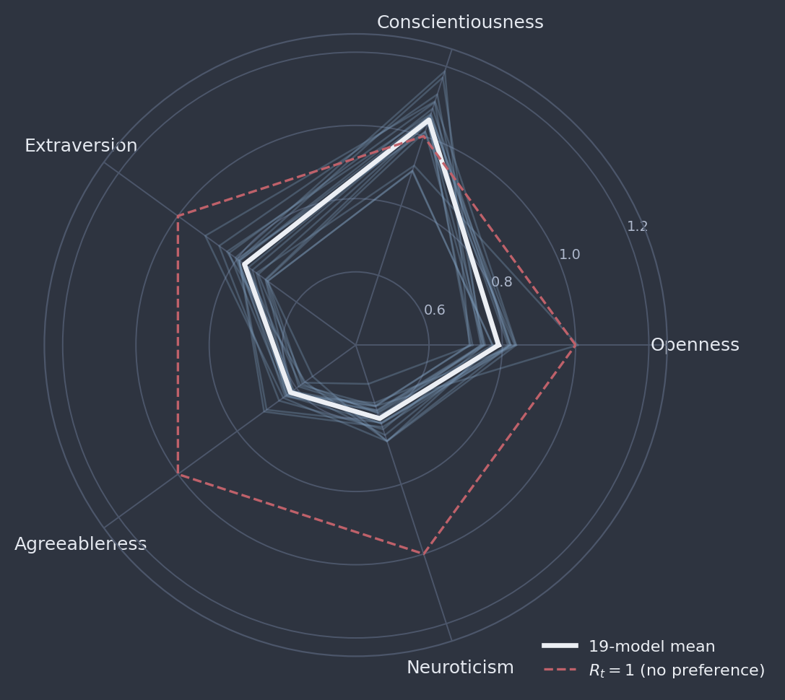
19 models · 7 families · one silhouette — near-perfect agreement on the trait ordering · dashed: no preference
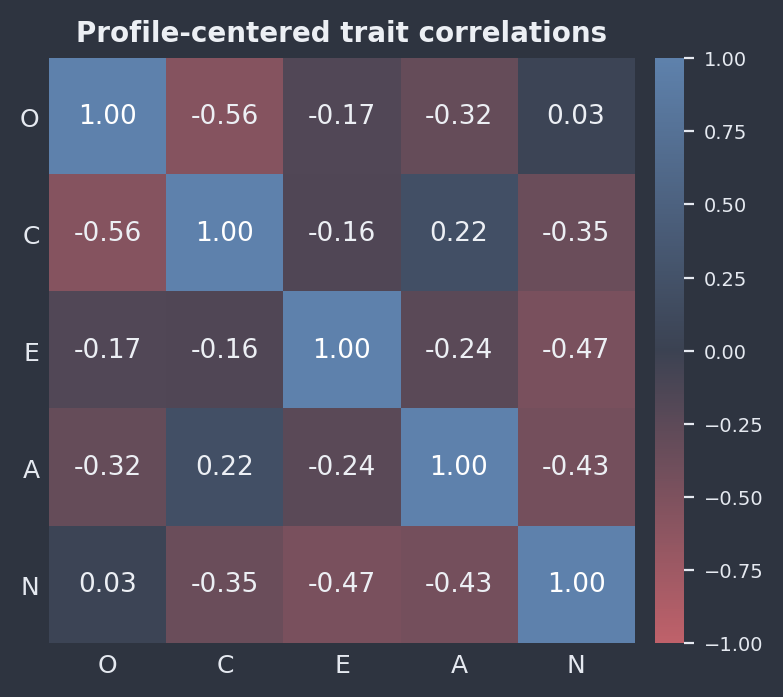
center each model’s profile, correlate traits across models · correlations look psychologically validated
The gradient between them, factor by factor, is a lens on how the model was molded — where the assistant departs from the humanity it was trained on.
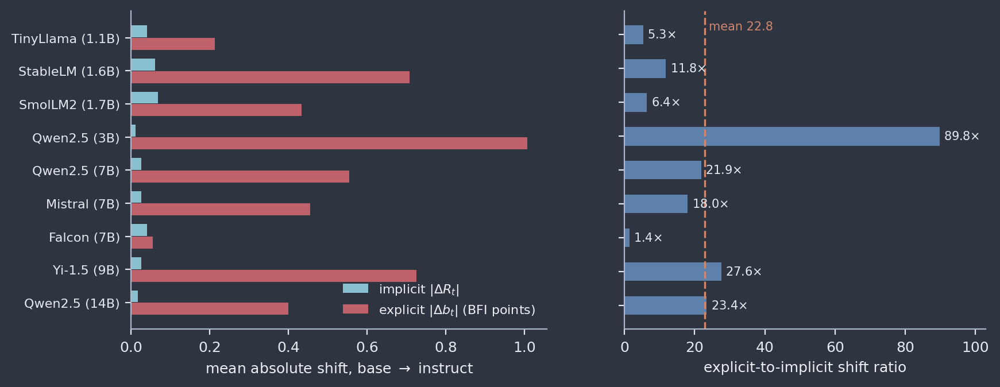
base/instruct pairs, both channels · post-training shifts explicit self-report roughly an order of magnitude more than the implicit profile
Part 3 · Mechanistic / representational modality
contrastive vectors → depth-weighted injection → the implicit ruler → what the geometry reveals
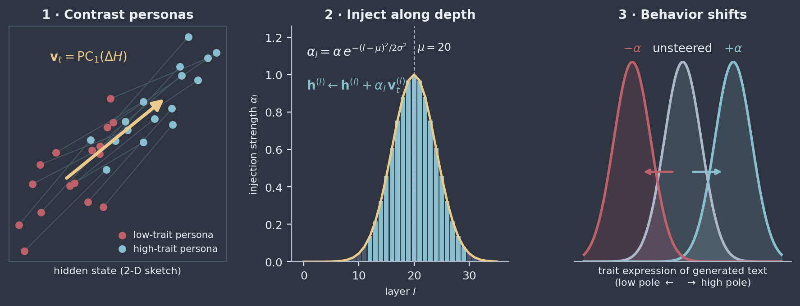
contrast persona pairs → PC1 of the differences → inject under a Gaussian depth envelope → generation shifts along the trait
50 contrastive persona pairs per trait × 5 template variants — e.g. “always finishes what you start” vs “goes with the flow”
Δh(l)t,i = h(l)(p+t,i) − h(l)(p−t,i)
v(l)t = PC1(ΔH(l)t)
h(l) ← h(l) + αl v(l)t, αl = α·exp(−(l−μ)2/2σ2)
rt(α) = mean PPLα(S+t) / mean PPLα(S−t), Δrt = rt(+α) − rt(−α)
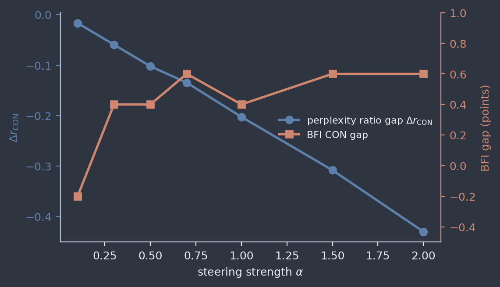
self-report saturates early · the perplexity-ratio gap keeps resolving graded change across the whole sweep — it detects manipulation where questionnaire scores saturate
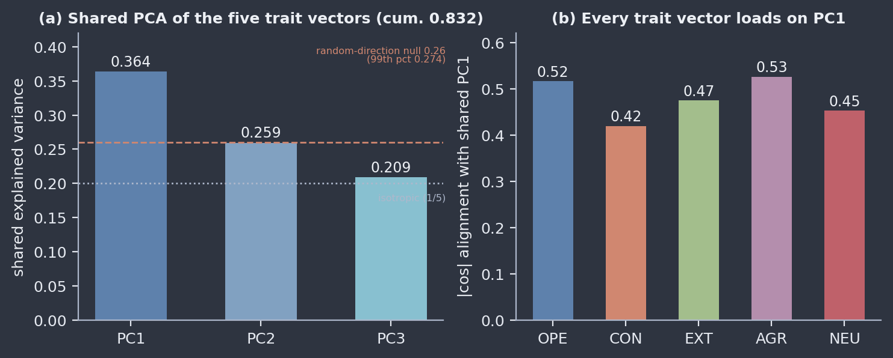
PC1 ≈ 36% of the five vectors’ joint variance (vs a 26% random-direction null) · every trait loads on it · replicated at PC1 = .34–.43 across 5 families
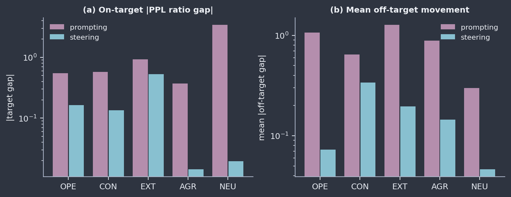
prompting: larger target gaps but 2–15× more off-target contamination · steering: smaller, surgical
A deployed language model is a corpus-shaped distribution wearing an alignment-shaped persona.
The persona is what talks, what prompts shape, what vectors steer. The distribution beneath is what implicit measurement reads — and almost nothing moves it.
Preference optimization (shorthand for the post-training pipeline)…